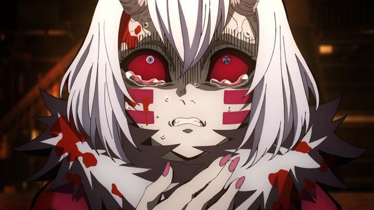
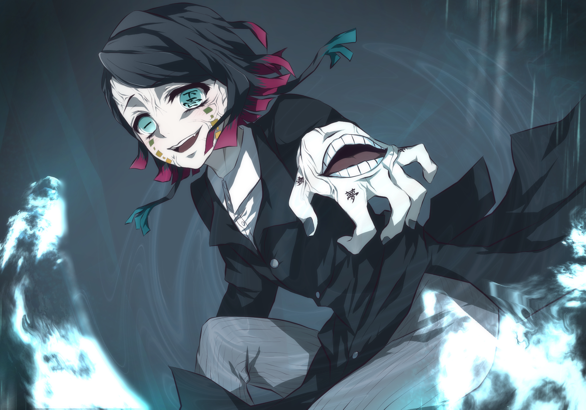

Luas Inferiores
As Luas Inferiores são um grupo de oni de elite no universo de "Kimetsu no Yaiba", que servem diretamente sob o comando de Muzan
Kibutsuji, o rei dos demônios. Classificados do seis ao um, esses demônios são reconhecidos por sua crueldade, habilidades únicas e a
sede insaciável por poder e sangue. Embora menos poderosos que as Luas Superiores, as Luas Inferiores desempenham papéis cruciais na
história, desafiando os matadores de demônios e contribuindo para o desenvolvimento dos protagonistas. Cada membro traz consigo uma
história distinta e habilidades que refletem sua personalidade e motivações, tornando-os adversários formidáveis e complexos.
Ex-6° Inferior Kyogai

Antes de se tornar um demônio, ele era um escritor e tocador de tambor, mas sempre foi desprezado por seu trabalho. Ao virar Oni,
Muzan o nomeou como a Lua Inferior Seis. No entanto, Kyogai perdeu sua sede por sangue humano, o que levou Muzan a removê-lo dos
12 Kizukis, pois ele não poderia mais evoluir como demônio. Após perder sua posição, Kyogai começou a vagar pela Mansão Tsuzumi,
com a única ambição de retornar aos 12 Kizuki.
Os caçadores de demônio o encontraram na mansão e começaram um combate. Kyogai tem o kekkijutsus (poder de sangue de demônio),
que, ao tocar os tambores localizados ao redor de seu corpo, ele consegue movimentar o cômodo em que está.
6° Inferior Kamanue

Kamanue se torna a Lua Inferior Seis após Kyogai perder o posto. Sua presença no anime é breve, aparecendo com os demais Luas
Inferiores no Castelo Infinito após serem convocados por Muzan. Embora suas habilidades não sejam mostradas, ele é provavelmente mais
forte e ágil que Kyogai. Durante o encontro, Kamanue demonstra nervosismo e medo, pensando em fugir. Muzan lê seus pensamentos
covardes e o mata antes que ele possa agir.
5° Inferior Rui
Rui, uma das Luas Inferiores com maior desenvolvimento em "Kimetsu no Yaiba", era uma criança doente antes de se tornar demônio.
Após receber sangue de Muzan, ele se torna saudável, mas começa a atacar humanos, inclusive matando sua própria família. Obcecado
em criar uma nova família, Rui forma uma prole de demônios aranhas. Cruel, ele usa seu kekkijutsu para criar teias de aranha
extremamente cortantes, que se tornam mais rígidas e afiadas com seu sangue demoníaco. A luta entre Rui, Tanjiro e Nezuko é
emocionante e marcante, despertando poderes fundamentais para o desenvolvimento dos irmãos Kamado na história.
4° Inferior Mukago

Conhecemos Mukago no Castelo Infinito durante a reunião das Luas Inferiores, mas não sabemos sobre os poderes e força dela.
Ela é uma Oni muito medrosa e sem confiança e a todo momento demonstra medo perante Muzan, o que leva o rei demônio a matá-la
assim como fez com Kamanue.
3° Inferior Wakuraba
Wakuraba aparentava ser uma das Luas Inferiores mais fiéis a Muzan. Ele pensava em como se tornar mais forte para suprir as
expectativas do rei demônio, mas também pensava mais no benefício próprio do que seguir cegamente as ordens de Muzan. Ele tenta
fugir do Castelo Infinito e é capturado e morto.
Ex-2° Inferior Hairo
Hairo, uma Lua Inferior ainda não mostrada no anime, foi morto antes da história principal começar. Apaixonado por armas, ele
colecionava katanas de caçadores mortos e possuía a habilidade de sangue demoníaco "Umbrakinesis", que lhe permitia usar sombras
para defesa e ataque. Hairo enfrentou Kyojuro Rengoku e foi morto por ele. Após derrotar Hairo, que era a Lua Inferior Dois,
Rengoku se tornou o Hashira das Chamas.
2° Inferior Rokuro
Rokuro, a Lua Inferior Dois, foi a última a morrer no Castelo Infinito. Sempre leal e obediente a Muzan, Rokuro pediu mais sangue
ao rei demônio, acreditando que poderia atender às suas exigências com esse poder adicional. No entanto, Muzan viu o pedido como
uma ordem e o matou. Seus poderes e habilidades nunca foram abordados no anime ou mangá.
1° Inferior Enmu

Enmu foi a única Lua Inferior que sobreviveu à reunião no Castelo Infinito. Sentindo prazer ao ver seus companheiros serem mortos
por Muzan, Enmu declarou que seria uma honra morrer pelas mãos do rei demônio. Impressionado com sua obediência, Muzan lhe deu mais
sangue e uma missão: matar um Hashira e Tanjiro. Enmu, extremamente ágil, possui um kekkijutsu que lhe permite dominar objetos
inanimados, como fez com o trem no Arco do Trem Infinito. Ele também pode aprisionar suas vítimas em sonhos para matá-las. Enmu foi
morto durante a luta contra Tanjiro.